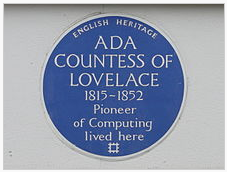

Ada Lovelace
The Queen of Computer Programming
Prepared By: Mr. Martens
Table of Contents
Table of Contents
Who is Ada Lovelace?
- English mathematician known for her work on Charles Babbage's computer called the Analytical Engine.
- Her notes on the engine include the first algorithm intended to be carried out by a machine.
- Because of this, she is often described as the world's first computer programmer.
Table of Contents | Home
Ada's Work

- With Babbage's help, Ada spent a year translating his seminar about the Analytical Engine
- Her detailed work was republished almost 100 years after her death in 1953
- When Babbage's engine was recognized as the world's first computer, her notes became the first computer program
Table of Contents | Home
Ada's Legacy

- A plaque has been installed at The Ada Lovelace House, which is located in Notinghamshire England near where she lived
- Ada Lovelace day is an annual event celebrated in mid-October whose goal is to "...raise the profile of women in science, technology, engineering and maths.
- On the 197th anniversary of her birth, Google dedicated its Google Doodle to her.
Table of Contents | Home